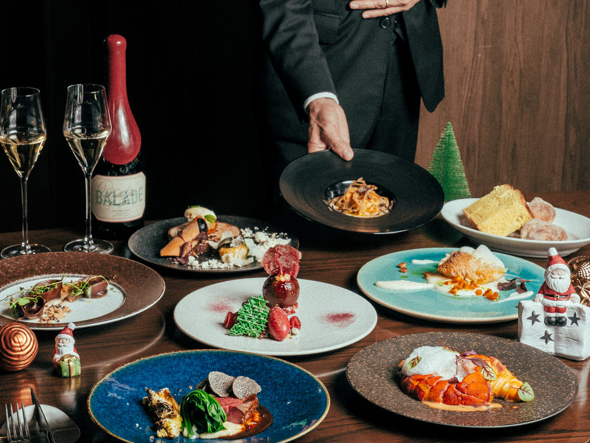

Christmas Dinner
夜景を見ながらクリスマスディナーを
¥22,000お一人様・税込・サービス料込
- シャンパーニュまたはノンアルコールスパークリングワイン付き
- 2部制：第1部 17:00〜／第2部 20:00〜（各部のご利用時間は予約ページでご確認ください）
一年に一度の特別な夜を、横浜の海辺で。シャンパーニュから始まる華やかなディナーは、オマール海老や黒トリュフ、栗など、冬の味覚を贅沢に取り入れた特別なコース。甘鯛のポワレや国産特選牛など、シェフの技と感性を込めた一皿一皿が、クリスマスの夜を彩ります。目の前に広がる海と、みなとみらいの幻想的な夜景。大切な人とグラスを傾けながら、忘れられないクリスマスのひとときを。
仕入れの状況により、一部のメニューが変わる場合があります。